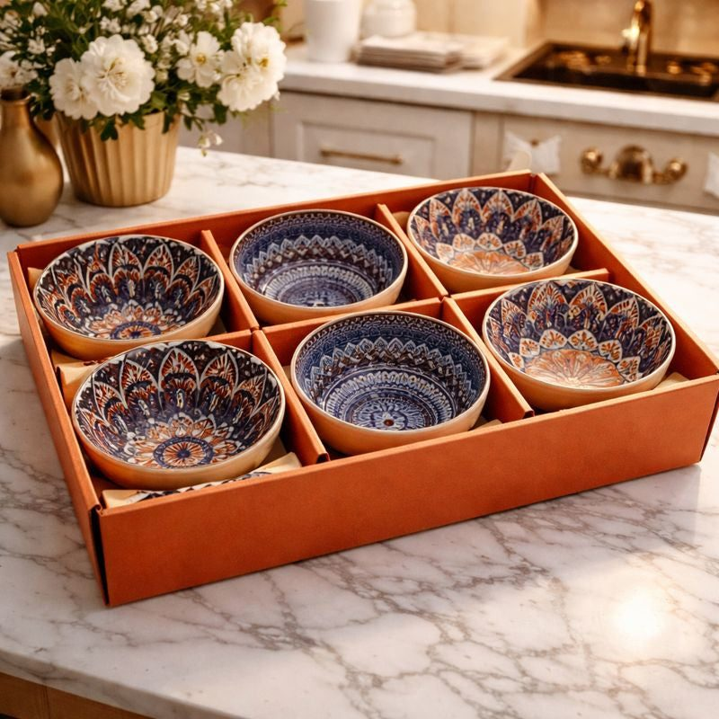
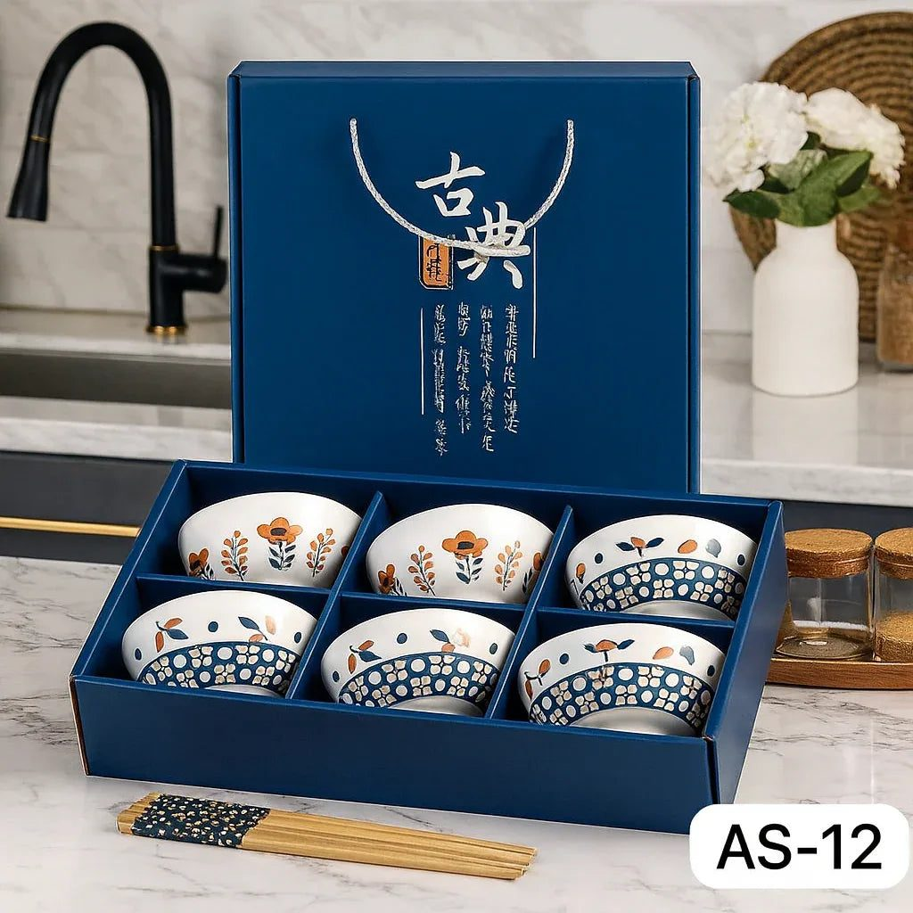
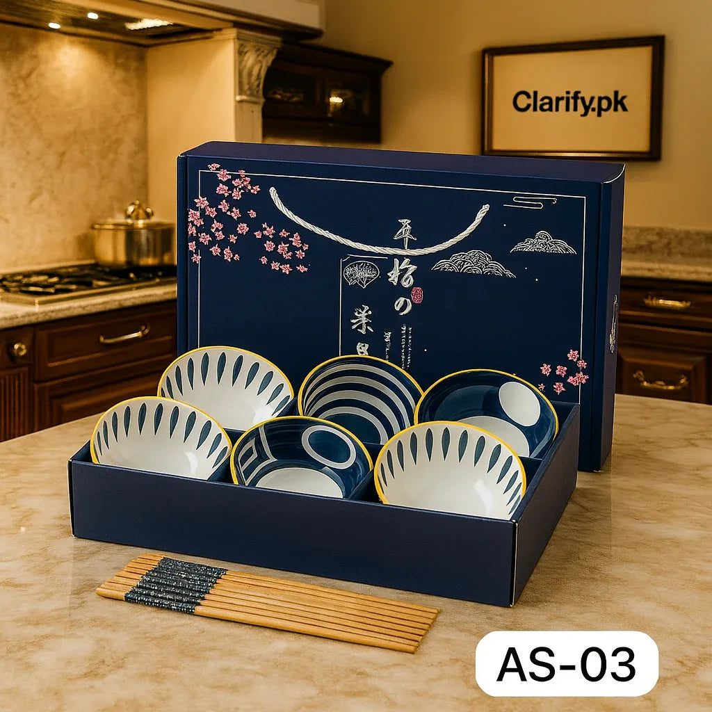

Every Pakistani dastarkhwan has a supporting cast. The salan and the rice get the attention, but nobody really enjoys biryani without a spoon of raita, and a plate of daal chawal feels unfinished without some kachumber or a bit of achar on the side. These small dishes need small bowls, and most homes end up using whatever is lying around: a chipped katori, a plastic tub, a cereal bowl borrowed from the kids.
That works, but it is worth thinking about properly once. A matching set of small bowls changes how the table looks, makes serving easier, and stops the side dishes from being an afterthought. This guide walks through what to look for and how to use a set across the week.
Know what your side dishes actually need
Start with the food, not the bowl. Raita is runny and is usually served with a spoon, so it needs a bowl with some depth and a lip that does not spill when it is passed around. Kachumber and green salad need a wider, shallower bowl so the onions and tomatoes are not crushed under their own weight. Chutneys, imli water and achar need the smallest bowls of all, because people take only a little and a large bowl makes a small portion look sad.

If you cook for four to six people on most days, a set of six bowls of one size usually covers raita, salad and one chutney with spares for a guest. Families who often serve two or three chutneys with pakoras or chaat may want a second, smaller set.
Ceramic, glass, steel or melamine
Each material has a place. Steel katoris are unbreakable and traditional, but they heat up and cool down fast, and cold raita sweats in them in summer. Melamine is light and cheap but scratches with time and is not for the microwave. Glass shows off colourful salads nicely and is easy to judge for cleanliness.
Ceramic is the comfortable middle ground for most families. It keeps raita cool for longer, it does not take on smells from garlic or onions, and a glazed surface wipes clean after turmeric-heavy food without much staining. Hand-painted ceramic also makes plain food look cared for, which matters when guests are at the table.
Sizes that make sense
When you shop, look at the diameter and depth rather than the photo alone. A bowl around the width of your palm suits chutney and achar. Something closer to the size of a large cereal bowl suits raita for the whole table. If a set lists capacity, think of how many ladles of raita your family finishes in one meal and choose accordingly; it is better to refill once than to carry a heavy, overfull bowl.
Stackability matters more than people expect. Bowls that nest neatly take far less cabinet space, and in many Pakistani kitchens cabinet space is the real limit, not budget.
A simple weekly rotation
Here is a way to get real use out of a set rather than saving it for guests:

- Weeknights: one bowl for raita or yoghurt, one for salad, one for achar.
- Fridays or family lunch: add a fourth for a chutney and a fifth for sliced lemons and green chillies.
- Iftar in Ramzan: use the bowls for chaat masala fruit, dahi baray portions and pakora chutney.
- Guests: put one bowl of each side dish at each end of the table so nobody has to keep asking for things to be passed.
Care that keeps the glaze looking new
Rinse yoghurt and chutney off soon after the meal; dried imli and turmeric are what stain. Avoid steel scourers on painted ceramic and use a soft sponge instead. If a set is labelled microwave or dishwasher safe, you can trust that for reheating, but hand-painted pieces generally last longer with hand washing. Store them with a paper napkin between stacked bowls if the glaze has raised patterns.
Where to find a set
If you are replacing a mismatched collection, look for sets of six that come in one design so the table looks deliberate. Trenducts carries several ceramic bowl sets in patterned and plain finishes that work well for raita, salads and chutneys, delivered anywhere in Pakistan.
The small detail that changes the meal
Nobody remembers the bowl, but people do notice when the raita is cold, the salad is crisp and everything they need is within reach. A matching set of small bowls is one of the cheapest ways to make ordinary home food feel like it was served with care, and once you have one, the plastic tubs quietly go back to the fridge where they belong.
